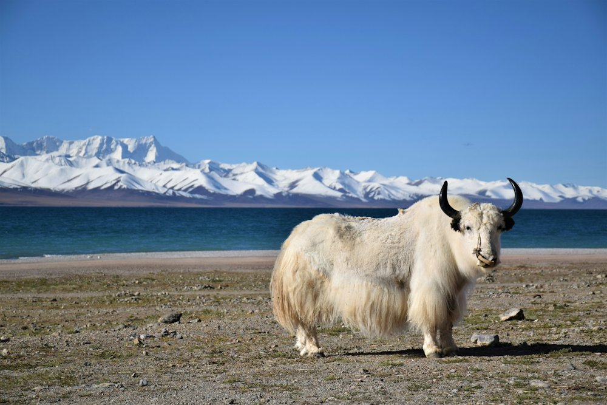

自然历年规律西南
纳木错圣象天门
Namtso Lake · 西藏 · 拉萨
最佳时间
6 – 9 月；7 – 8 月湖畔草原最绿
纳木措 11 月起大雪常封山，6–9 月道路最稳。
天湖与念青唐古拉：海拔 4718 米的湛蓝圣湖，圣象天门石拱门是隐藏王牌。
不能错过
- 扎西半岛看湖与雪山同框
- 北岸圣象天门人少景绝，需越野车往返
当地美食
酥油茶+糌粑扎西半岛藏家帐篷标配
风干牦牛肉圣湖牧区风干生吃/烤制
酸奶纳木措边牧民酸奶，酸到眯眼
藏式面片汤湖边取暖的神器
旅人提醒
- 海拔近 5000 米，高反敏感者谨慎
- 湖边住宿极简陋，多数人当日往返
月度热力与气温
-7°
1
-4°
2
2°
3
7°
4
12°
5
17°
6
17°
7
16°
8
14°
9
8°
10
0°
11
-6°
12
适宜度（柱高，5=最佳）依据活动窗口与气候整理；气温为月均高温近似值（°C），仅供规划参考，出行前请查当地预报。
编辑核实笔记 · 整理自拉萨市公开资料，非亲历；通行以路况公告为准。
预订 / 官网
官方页面：查看官网 / 官方信息 ↗ · 票价与预约以官网为准
联盟链接含占位 tracking id（Booking/Klook/Trip.com），上线替换为真实 ID 即生效；均带 utm 参数与点击统计。